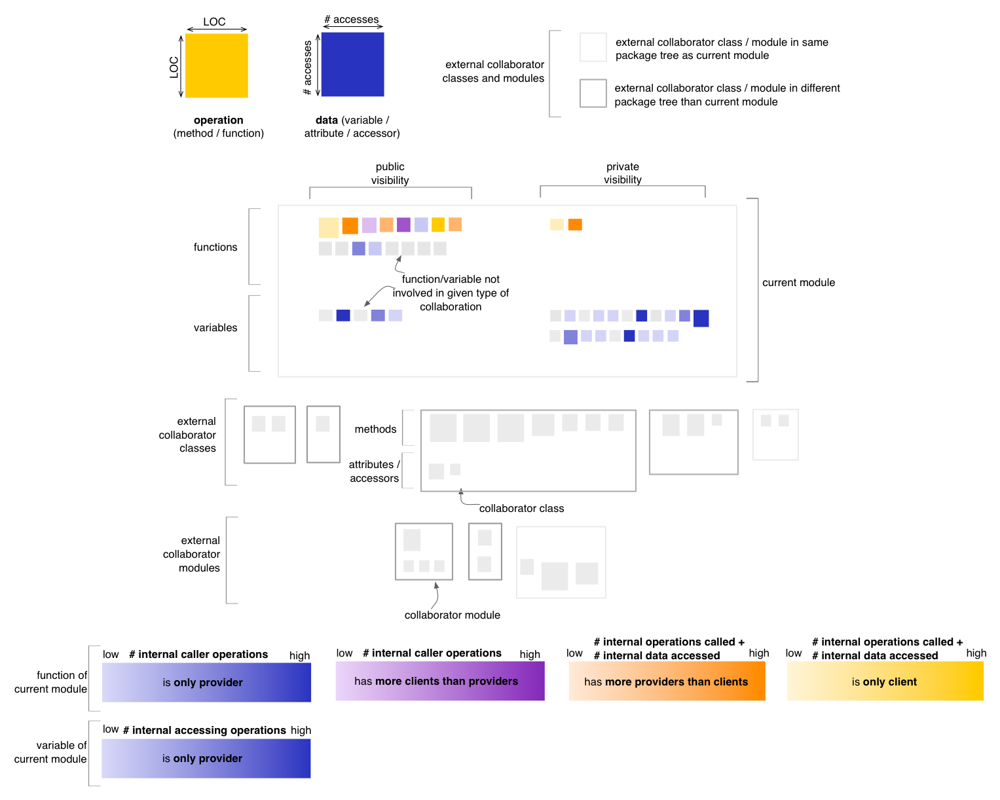
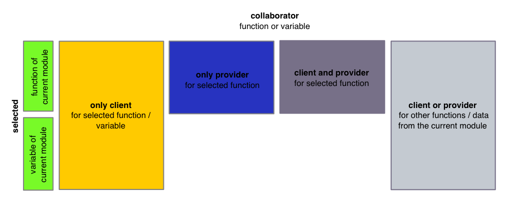

Module Map - Cohesion Perspective
The Cohesion Perspective of the Module Map
conveys a sense of the degree to which the current module is cohesive from the point of view of operation calls and data
accesses. In this perspective the coloring of operations and data
belonging to external collaborators is disabled. In the
default state,
the Cohesion Perspective will render data nodes using a blue color
gradient, computed based on the number of accessing operations from the
current module. Operation nodes will be rendered based on
their predominant nature from the viewpoint of operation calls and data
accesses, using
four color gradients:
- if an operation calls other operations or accesses data of the
current module, but is not itself called (i.e. it is a
pure client) from within the current module, it is rendered in a shade
of yellow
- if
an operation calls other operations or accesses data of the current
module, and is also called from within the current module, it will be
rendered in
a color that depends on which aspect is predominant (i.e. mostly client
shown in a shade of orange, or mostly provider shown in a shade
of magenta)
- if an operation is called by
other operations of the current module, but does not itself call other
operations nor it accesses any data of the current module (i.e. it is a
pure provider), it is shown in a shade of blue

Entity selection
The user may select an operation or a data in the map, in
which case the coloring of the map changes to reflect the cohesion from
the point of view of the selcted entity. The selected entity is colored
in green (with no borders). All other nodes are colored using
the four colors described below, based on their relation to
the selected entity. In case of the Cohesion
Perspective, this relation is defined in terms of internal operation
calls and internal data accesses. Note that the last color shown below
is actually reserved for nodes with no relation to the selected entity
but with relations
to other nodes from the current module. This shade of
gray is slightly darker than the one used for nodes
with no relation to the data / operations of the current module.

Other quality perspectives
Complexity, Coupling,
Design Flaws, Encapsulation
Metrics used
LOC